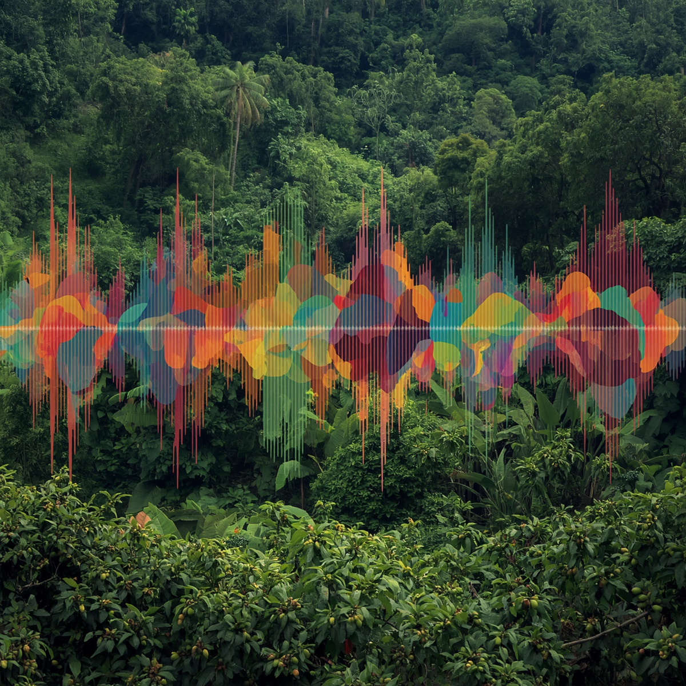

¿Cómo se oye?
Se identifica con sonidos naturales del paisaje cafetero: pájaros, brisa entre cafetales y el sonido de una cafetera preparando café fresco.
Katurro es una propuesta educativa que une la cultura cafetera con el aprendizaje interactivo. En este espacio se puede conocer el valor del café, su historia, su proceso y también practicar conceptos básicos de HTML mediante juegos y ejercicios.
Más que una página informativa, Katurro busca convertirse en una experiencia cercana: una forma de aprender sobre el territorio cafetero usando recursos visuales, actividades dinámicas y navegación sencilla.

El proyecto nace para acercar a los jóvenes a la cultura cafetera del Eje Cafetero.
Katurro nace como una iniciativa educativa para acercar a los jóvenes a las raíces de la cultura cafetera. A través de un entorno interactivo y lúdico, buscamos que el aprendizaje sobre el café vaya más allá de la historia y se convierta en una experiencia de exploración.
Nuestro objetivo es generar una conexión emocional con el territorio, motivando a los usuarios a valorar las tradiciones de las familias cafeteras de Pereira, Risaralda y el Eje Cafetero.

La identidad de Katurro no se limita a lo visual. El proyecto se construye desde sensaciones relacionadas con el paisaje cafetero: sonidos, colores, aromas y sabores que ayudan a crear una experiencia más completa.

Se identifica con sonidos naturales del paisaje cafetero: pájaros, brisa entre cafetales y el sonido de una cafetera preparando café fresco.
Evoca el aroma del café recién hecho, la tierra húmeda después de la lluvia y la sensación cálida de estar cerca de una tradición familiar.
Sabe a una experiencia auténtica: café intenso, cappuccino, latte, café frío, postres caseros y sabores tradicionales de la región.
Usa verdes, beige, marrón, rojo vino y amarillo para representar naturaleza, café, tradición, calidez y energía dentro de una estética juvenil.
Este proyecto fue desarrollado por un equipo de estudiantes que combinó investigación, diseño, contenido educativo y actividades interactivas para crear una página sobre la cultura cafetera y el aprendizaje básico de HTML.
Integrante del equipo Katurro.
Integrante del equipo Katurro.
Integrante del equipo Katurro.
Si deseas conocer más sobre Katurro, puedes comunicarte con el equipo del proyecto para recibir información adicional sobre nuestro propósito educativo y desarrollo.